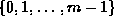

Data Structures and Algorithms
with Object-Oriented Design Patterns in C++
Data Structures and Algorithms
with Object-Oriented Design Patterns in C++Bucket sort is possibly the simplest distribution sorting algorithm. The essential requirement is that the size of the universe from which the elements to be sorted are drawn is a small, fixed constant, say m.
For example, suppose that we are sorting
elements drawn from ,
i.e., the set of integers in the interval [0,m-1].
Bucket sort uses m counters.
The  counter keeps track of the number of occurrences
of the
counter keeps track of the number of occurrences
of the  element of the universe.
Figure
element of the universe.
Figure  illustrates how this is done.
illustrates how this is done.
In Figure , the universal set is assumed to be  .
Therefore, ten counters are required--one to keep track of the number of zeroes,
one to keep track of the number of ones, and so on.
A single pass through the data suffices to count
all of the elements.
Once the counts have been determined,
the sorted sequence is easily obtained.
E.g., the sorted sequence contains no zeroes,
two ones, one two, and so on.
.
Therefore, ten counters are required--one to keep track of the number of zeroes,
one to keep track of the number of ones, and so on.
A single pass through the data suffices to count
all of the elements.
Once the counts have been determined,
the sorted sequence is easily obtained.
E.g., the sorted sequence contains no zeroes,
two ones, one two, and so on.
 Copyright © 1997 by Bruno R. Preiss, P.Eng. All rights reserved.
Copyright © 1997 by Bruno R. Preiss, P.Eng. All rights reserved.